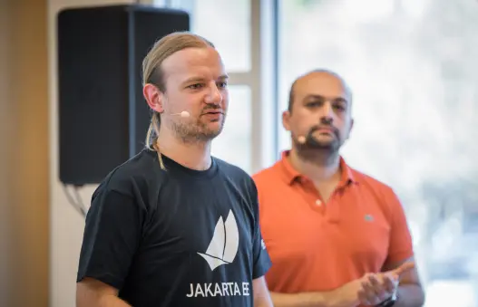
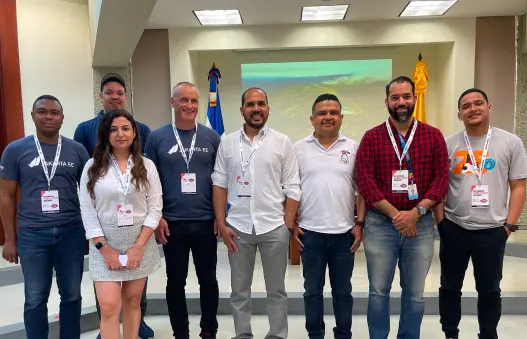

Join industry leaders and innovators driving Jakarta EE forward. As a member, you’ll help guide the technology’s evolution, influence key decisions, and gain visibility as part of the open enterprise Java ecosystem.

Join our global community of developers and make your mark on the Jakarta EE platform. From code to documentation, every contribution helps strengthen open, cloud-native enterprise Java.
Your support helps sustain Jakarta EE’s development, events, and community growth. Sponsor to help keep enterprise Java open, secure, and thriving for everyone.